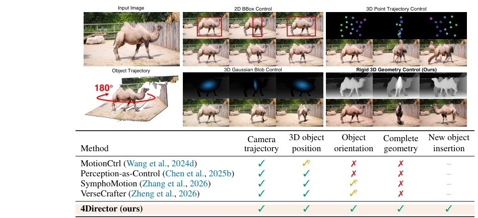
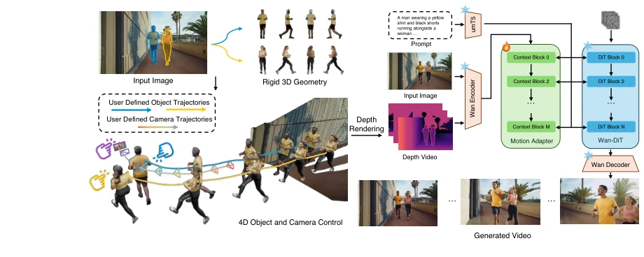
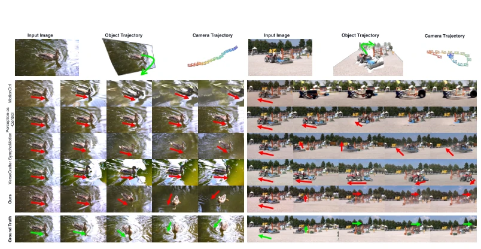
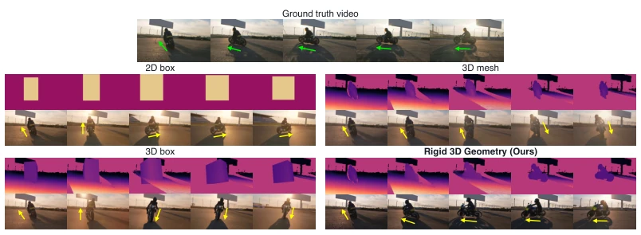
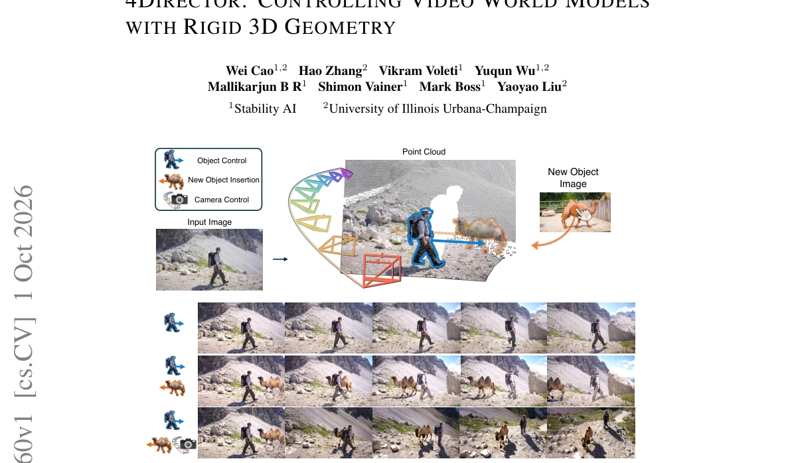
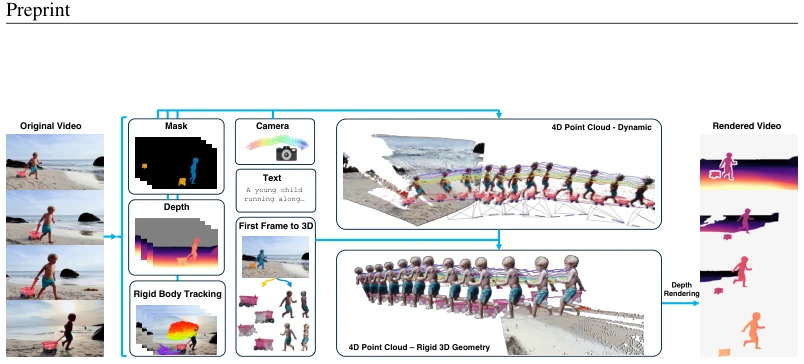
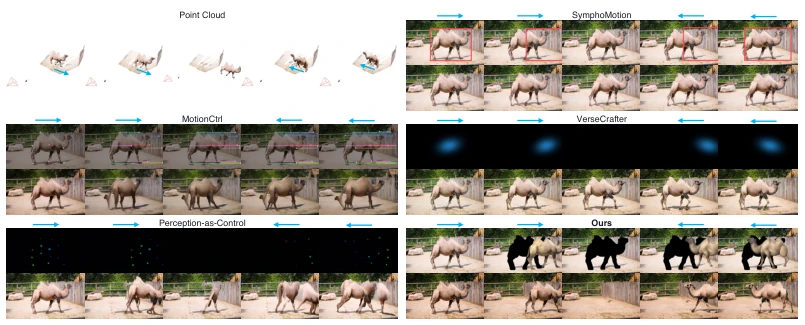
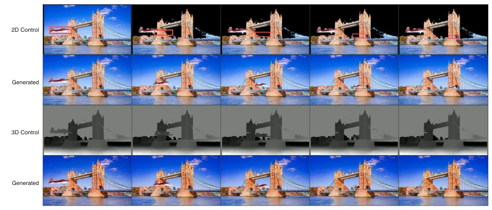
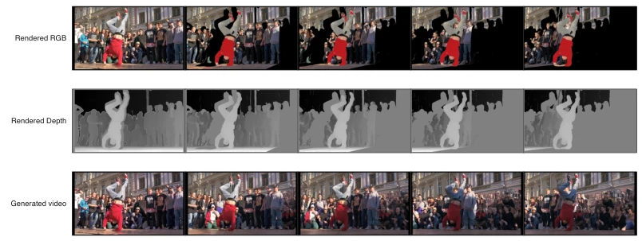
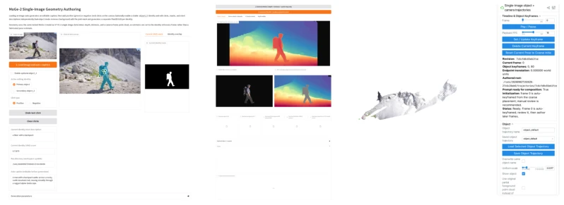

The name '4Director' is quite ambitious, attempting to direct a video world model. Its core logic is straightforward: treat objects as rigid blocks. Existing methods either blindly guess depth on the 2D plane or make do with Gaussian spheres, revealing flaws upon rotation with no geometric consistency. 4Director directly constructs a complete canonical mesh for each object; rotation is rotation, not scaling, a robust approach that thoroughly eliminates depth ambiguity from 2D cues. The Motion Adapter is responsible for converting depth maps into videos, leaving appearance, lighting, and non-rigid dynamics to the generator to infer. However, since it relies on rigid geometry, it cannot control dance steps, relying solely on the generator to guess, which is a point worth critiquing, as humans cannot be treated as rigid blocks. The dataset RealCOD-Rigid is quite substantial, automatically annotated with 20,000 clips. In summary, control precision has improved, but flexibility is also restricted, suitable for documentaries but not action movies, representing a trade-off attempt.
研究动机Motivation
专业视频制作需要精确控制相机和物体运动，但现有方法控制粒度太粗。一类用 2D 线索（如 bounding box, point tracks），深度和旋转模糊，一个框对应无数种 3D 运动，MotionCtrl (Wang et al., 2024d) 就受限于此；另一类用 3D 代理（如 Gaussian blob, point clouds），但几何不完整，转身或新视角下会 hallucinate，VerseCrafter (Zheng et al., 2026) 和 SymphoMotion (Zhang et al., 2026) 都缺乏完整表面。这导致物体身份丢失或几何不一致，无法实现专业级导演需求。4Director 想解决这个，用显式 4D 场景表示，每个物体是完整 canonical mesh，每帧一个 rigid transformation，统一坐标系，消除歧义，确保物体转身时几何可见而非再生。
Professional video production requires precise control of camera and object motion, but existing methods have control granularity that is too coarse. One class uses 2D cues (e.g., bounding box, point tracks), where depth and rotation are ambiguous, one box corresponding to countless 3D motions; MotionCtrl (Wang et al., 2024d) is limited by this. Another class uses 3D proxies (e.g., Gaussian blob, point clouds), but geometry is incomplete, hallucinating upon turning or new views; VerseCrafter (Zheng et al., 2026) and SymphoMotion (Zhang et al., 2026) both lack complete surfaces. This leads to object identity loss or geometric inconsistency, failing to meet professional-level director requirements. 4Director aims to solve this using explicit 4D scene representation, where each object is a complete canonical mesh, with one rigid transformation per frame, unified coordinate system, eliminating ambiguity, ensuring geometry is visible rather than regenerated when objects turn.

Figure 2: Control representations. Top: given an input image and an object trajectory (a 180◦ turn in place), we compare four control signals: a 2D bounding box, a 3D Gaussian blob, 3D point trajectories, and our rigid 3D geometry. Bottom: capabilities of the compared representations (✓supported, ✓p partial, ✗not supported, – not stated in the paper).
The overall process is divided into three steps. First, input images estimate depth via MoGe-2, SAM 2 segments objects, Pixal3D reconstructs complete canonical mesh, background converts to point cloud, unified coordinate system. Second, users define camera and object trajectories in 3D view (SE(3) transformation), rendered into depth video as control signal, containing only rigid body motion. Finally, the Motion Adapter module, based on Wan2.1-VACE-14B, encodes depth video and injects into DiT, generator supplements appearance, lighting, and non-rigid dynamics. Training data comes from RealCOD-Rigid, automatic pipeline recovers rigid 3D scenes from RealCOD-25K, containing 20,774 clips. IG-IoU metric evaluates object control, only calculating IoU for identity-preserved frames, avoiding situations where position is correct but identity is wrong. Adapter training uses flow-matching objective, learning mapping from rigid rendering to real videos.

Figure 3: Overview of 4Director. Left: each object is reconstructed once as a complete canonical mesh and moved by one rigid transformation per frame; the meshes, a background point cloud and the camera share one coordinate frame, in which the user prescribes the trajectory of each object and the camera, and the scene is rendered to a depth video (Sec. 3.1). Right: the Motion Adapter, a trainable branch, injects this rigid rendering into a pretrained video generator, which supplies appearance, illumination and non-rigid dynamics (Sec. 3.2); it is trained on RealCOD-Rigid (Sec. 4).
Dataset RealCOD-Rigid contains 20,774 clips. Baselines include MotionCtrl, Perception-as-Control, SymphoMotion, VerseCrafter. Metrics include FID, FVD, CLIP-SIM, camera rotation/translation error, and newly proposed IG-IoU. 4Director leads on all metrics, IG-IoU reaches 60.4, 10% higher than VerseCrafter. Ablation experiments show, removing complete geometry or rotation will lower IG-IoU, proving the importance of rigid geometry. User study also shows highest control accuracy. But when objects leave view and return, other methods keep object existence, 4Director can correctly hide and then reappear. However, for non-rigid motion like dancing, it can only maintain initial posture, unable to directly control limbs, this is the cost of rigid assumption.

Figure 5: Qualitative comparison on joint camera and object control. For each clip, the top row shows the input image and the prescribed trajectories, and the rows below show temporally aligned frames from the four baselines, 4Director and the source video. Arrows mark the object heading, green in the source and red in the generated videos. Only 4Director completes the turn of the source video; the baselines keep the original heading, turn only partway, blur or lose the subject.

Figure 7: Ablation on the control representation. Top: the source video and three alternative controls, each shown as the control video above the video generated from it; arrows mark the mo- torcycle heading, and only the rigid 3D geometry follows the prescribed turn. Bottom: what each control encodes and its scores; the three arms are trained with the recipe of 4Director, and the last row is 4Director as in Table 1a. Best bold, second best underlined.
其他图片Other Figures

Figure 1: Camera and object control from a single image. Top: the image is lifted into a back- ground point cloud and complete rigid 3D geometry for each object, in which the user draws the object and camera trajectories and, optionally, inserts a new object from a reference image. Bottom: 4Director generates videos that follow both trajectories, with plausible object motion, consistent ap- pearance and illumination, and the background revealed by the camera filled in.

Figure 4: RealCOD-Rigid annotation pipeline. From each clip we estimate object masks, depth, and the camera trajectory, which together give a dynamic 4D point cloud of the scene (4D Point Cloud – Dynamic); we reconstruct a canonical mesh for every masked object from the first frame (First Frame to 3D) and track 3D points on it as a rigid body (Rigid Body Tracking), which yields one rigid transformation per frame and aligns the canonical mesh to every frame (4D Point Cloud – Rigid 3D Geometry), giving the rigid 3D scene. Rendering it to a depth video yields the control; the original clip is the training target, with its text description as the prompt.

Figure 6: Objects leaving and re-entering the view. Top left: the partial point cloud lifted from the input image; the camel walks out of the camera’s view and comes back (blue arrows) while the camera stays fixed. For each method, the upper row is the control it receives and the lower row the video generated from it. Only 4Director shows the empty frame while the camel is away and then brings the same camel back.

Figure 8: Occlusion. A plane is directed to fly under the bridge and behind its right tower. Rows 1–2: the control of SymphoMotion, a 2D box projected from the 3D trajectory onto the rendered point cloud (red), and the video it generates. Rows 3–4: the depth control rendered from the rigid 3D scene and the video 4Director generates from it. Only with the depth control does the tower hide the plane.

Figure 9: Failure case. A breakdancer in a handstand is moved to the right as one rigid body while the camera moves. Top: the rigid 3D scene rendered to RGB, for visualization only, and to the depth video that conditions the adapter; pixels without geometry are black in the RGB render and uniform gray in the depth video. Bottom: the generated dancer keeps the pose of the first frame throughout, following the rigid silhouette, instead of dancing.

Figure 10: Authoring interface. The three stages of building and directing a rigid 3D scene from a single image; in (c) the trajectories are set by keyframes on a timeline.